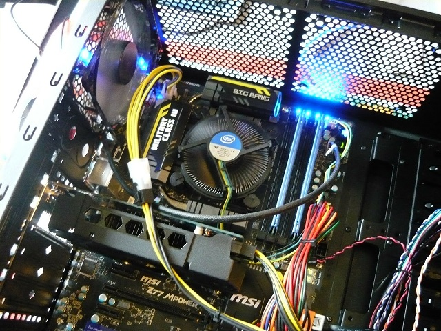
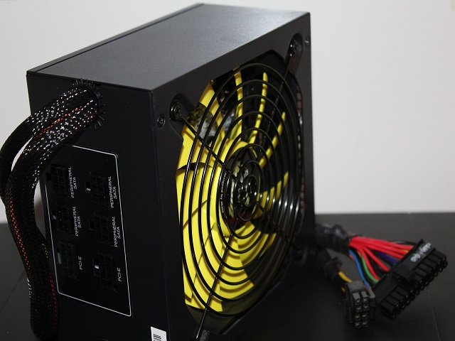
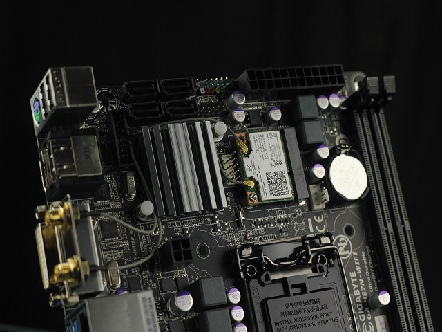
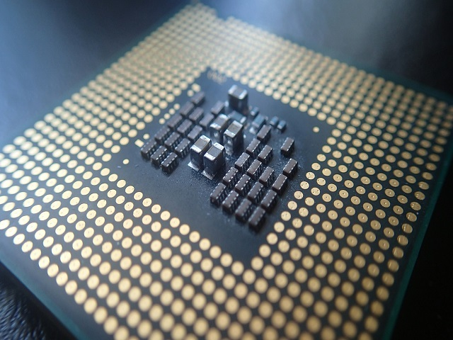
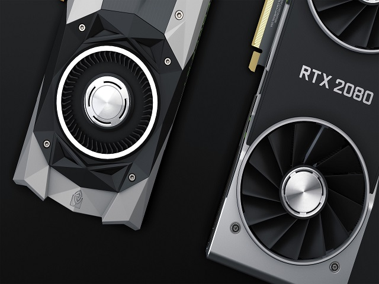

Hardver fogalma
Hardver alatt a számítógép fizikailag megfogható részeinek összességét értjük. A számítógép működéséhez alapvetően hardver és szoftver szükséges, a kettő közötti kapcsolatot a firmware hozza létre, ami a hardverekbe a gyártók által „beépített” szoftvernek tekinthető.
Az angol nyelvben ez a szó eredetileg vasárut, szerszámokat jelentett. A személyi számítógépek megjelenésekor kezdték használni megkülönböztetésül a software fogalmától. Így a hardware lett az eszköz, amely alkalmas a software (a rajta futó program) tárolására és futtatására. Ősi formája a Neumann-féle gondolat, amelynek értelmében a számítógép nemcsak az adatokat, hanem a futtatható programot is képes tárolni.
Egy személyi számítógép alkatrészei általában a következők:

Számítógép ház
Az asztali számítógép vázát a ház alkotja, amelyben speciális rögzítés lehetőségek vannak a részegységeknek.

Tápegység
A tápegység (angolul Power Supply Unit, vagy röviden PSU) a számítástechnikában, (a "PC-ben") az az alkatrész, amely a számítógép működéséhez szükséges feszültségeket állítja elő.A 230V váltóáramot egyenárammá és törpefeszültséggé alakítja.

Alaplap
Az alaplap a központi vagy elsődleges áramköri lapkája egy számítógépes rendszernek vagy más összetett elektronikai rendszernek.A számítógép elektronikus elemei az alaplapra vagy alapkártyára vannak építve.

Processzor
A CPU (angol: Central Processing Unit – központi feldolgozóegység) más néven processzor ill. mikroprocesszor, a számítógép „agya”, azon egysége, amely az utasítások értelmezését és végrehajtását vezérli, félvezetős kivitelezésű, összetett elektronikus áramkör.

Videókártya
A videókártya (más néven videóadapter, grafikus kártya vagy grafikus adapter) a számítógép megjelenítésért felelős fő alkotórésze. Feladata, hogy a számítógép által küldött képi információkat feldolgozza, és egy megjelenítő egység számára értelmezhető analóg jelekké alakítsa.